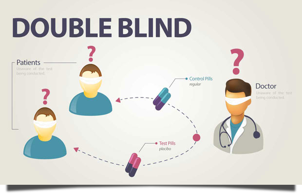

Double-Blind Experiments
Because of the problems single-blind trials can introduce to an experiment, especially in psychology and social science research, double-blind trials are often the preferred method of experimentation. With double-blind trials, some of the participants are given real treatment while others are given fake treatment or a placebo. The significance of double-blind trials is that neither the researchers nor the participants know who is given the real treatment and who is given the fake treatment or placebo. Only after the experiment has concluded do the researchers learn which participant had which treatment. Importantly, the assignment of participants to the real or fake treatment groups is random.
Double-blind studies are important because, as much as we would like to, we cannot trust the direct personal experiences of people. Confounding factors are partly responsible for this lack of trust because confounding factors can create the illusion that ineffective treatment is actually effective.
Common Confounding Factors:
- Placebo Effect
- Reinterpretation Effect
- Observer Bias
- Selection Bias
- Statistical Illusions
These are discussed in more detail on the following pages.